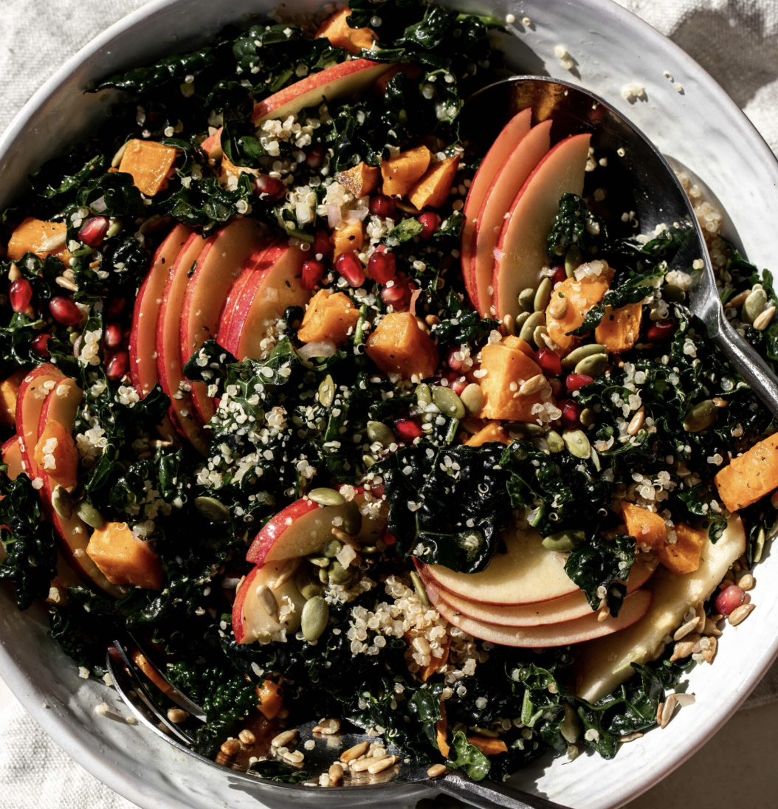

Kale Harvest Bowl
From Cooking with Cocktail Rings
Click Here for Full Recipe!
Ingredients:
Dressing:
instructions:
- To make dressing, whisk together olive oil, lemon juice, maple syrup, Dijon mustard, and shallot until it forms a thick mixture
- Preheat oven to 400°F
- Put sweet potato on a sheet pan, coat with olive oil, and season with salt and pepper
- Bake sweet potato for 20 minutes
- Put kale in a large salad bowl and mix it with half of the dressing
- Top with sweet potato, quinoa, pomegranite seeds, pumpkin seeds, sunflower seeds, hemp seeds, and apple
- Toss to combine and drizzle with additional dressing